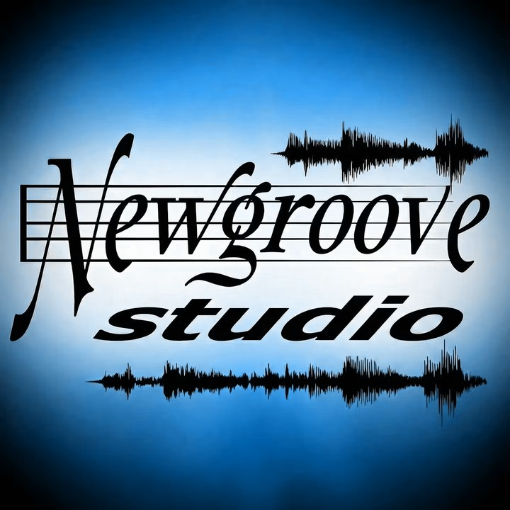

The home of everything I make in sound — live sessions, studio recordings, late-night jams, and music caught out in the wild. Tune in and travel by frequency.
Every frequency the studio runs on — explore the catalog by category.
Slow-burning blues — grit, soul, and a whole lot of feel.
Songs led by the women out front — soulful and intimate.
Pocket rhythms and bass-forward grooves built to move.
Spirit-filled sessions — harmonies, praise, and lift.
Standards and explorations — heads, solos, and swing.
Full-band takes recorded live on the floor — raw energy, one room, no overdubs.
Martha's Vineyard artists, tracked and mixed at the studio.
Vocal-driven cuts fronted by the guys.
Original material written and produced at Newgroove — the studio's own voice.
Spoken word and verse over sound — words out front.
Open, improvised, anything-goes — where grooves are born before they're songs.
Guitars up — riffs, ballads, and full-throttle takes.
Warm, classic soul — feel-good grooves and heartfelt vocals.
Loose, fun studio runs — good vibes caught on tape.
Behind-the-scenes run-throughs — the band working songs into shape.
Tracked, layered, and mixed — produced records built piece by piece.
Press play and let the engine carry the sound. Filter by session type, or just hit shuffle and drift.
88 tracks streaming from Newgroove Studio · filter by category above.
Session videos, performances, and studio films. Click a clip and it plays right here.
data-yt) and it plays in this frame.
The players, singers, and writers who pass through Newgroove. Each one has their own page — picture, bio, upcoming gigs, and the work they've done in the studio.
Pictures, video, and the projects that live here — what's on the board now and what we've already put out.
Drop studio photos in here — swap each tile for an <img>.
Studio video reel — embed YouTube clips here too.
What this record/session is, who's on it, where it's headed.
Short description of the work happening now.
Something already finished and out in the world.
Another completed studio project.